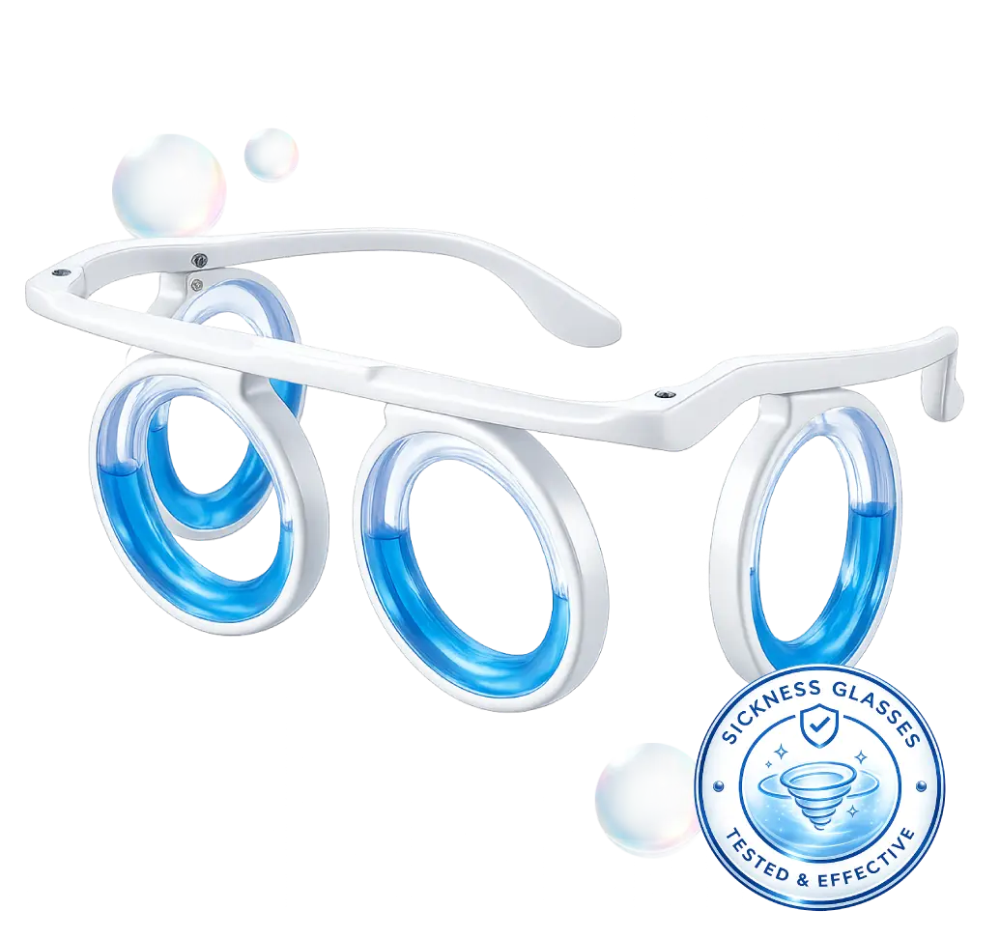
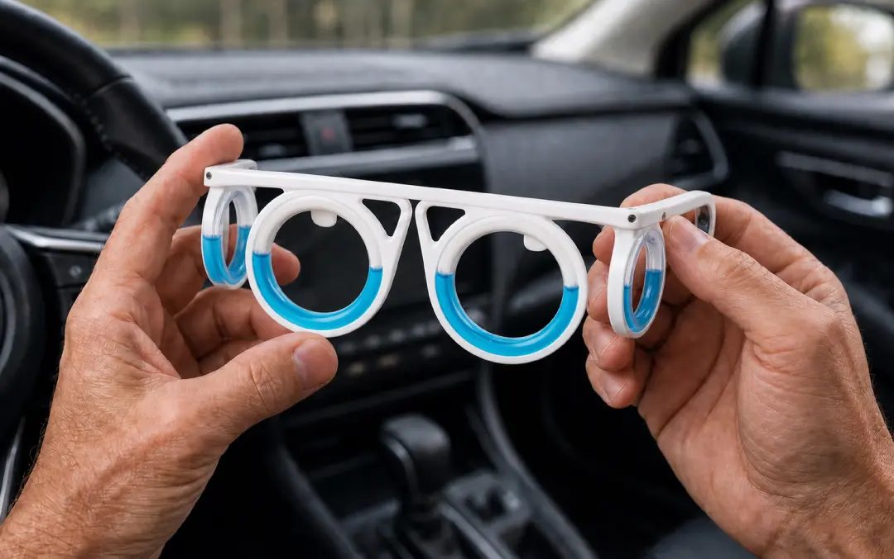
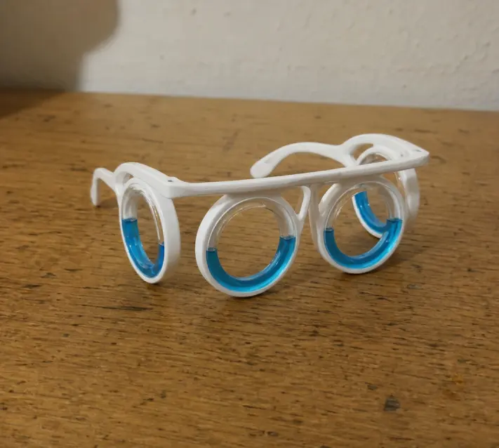
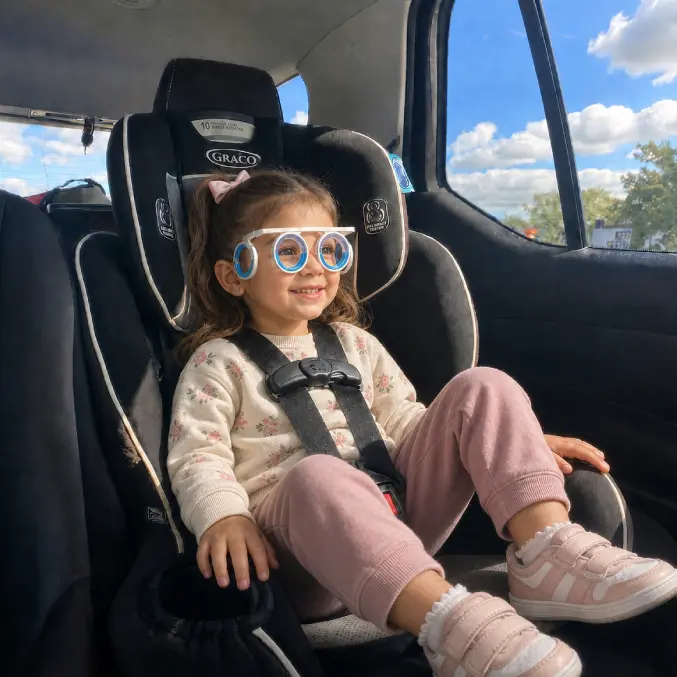
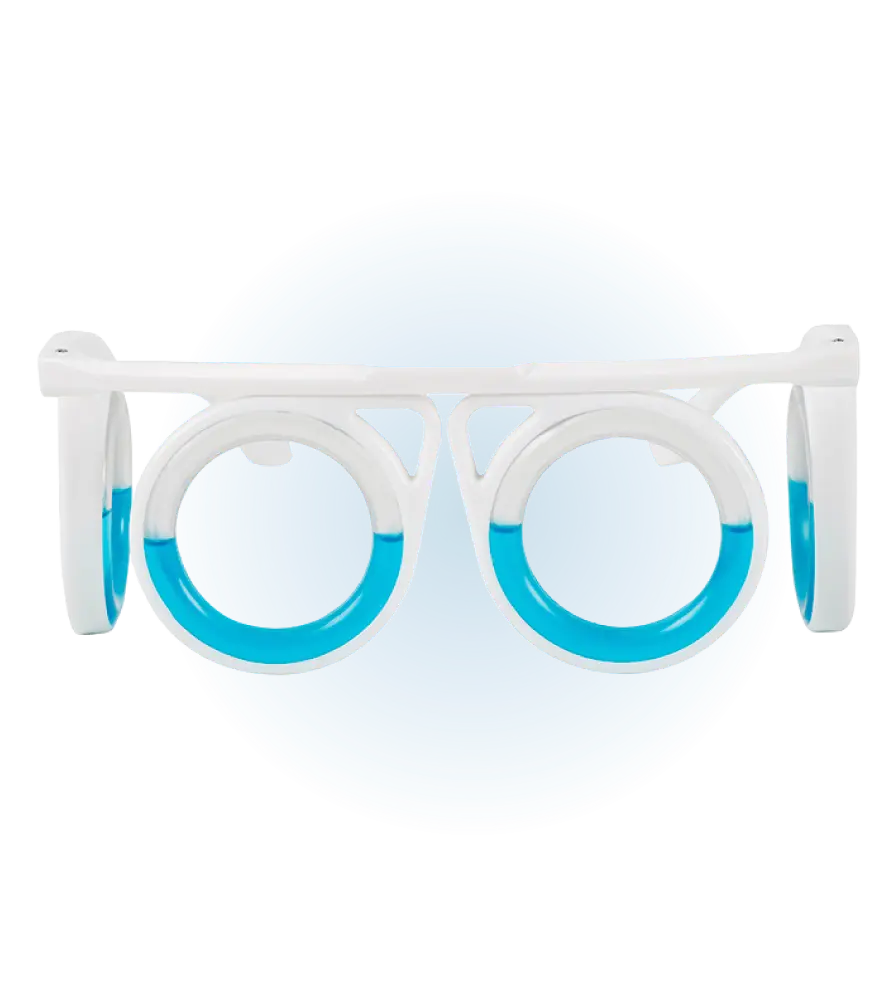

How the rings work
Blue liquid moves with you and is designed to act as a visual “horizon” — which may help reduce the mismatch that often brings on travel nausea.
Qinux Nauzzof
A lightweight, non-medicated option designed to help ease feelings of nausea when you travel by car, train, boat or plane — without tablets or drowsiness.
Results vary. Not a medicine or medical treatment.If bends in the road, choppy water or turbulence leave you feeling sick, Qinux Nauzzof may help. The blue liquid in each ring is designed to give your eyes a steadier visual reference while you move — a simple, non-medicated approach many travellers use when motion-related nausea gets in the way of the trip.
When travel nausea gets in the way
Useful tips: put them on before you set off or at the first sign of discomfort, look ahead when you can, and keep them as one option alongside fresh air and sensible breaks.
Blue liquid moves with you and is designed to act as a visual “horizon” — which may help reduce the mismatch that often brings on travel nausea.
Prefer not to take travel sickness pills when you can avoid them? These glasses offer a non-medicated alternative with no tablet-related drowsiness.
The open, lens-free design is made so you can still look out of the window or around the cabin — useful on longer UK and overseas trips.

What to expect
Qinux Nauzzof is built for real journeys — school runs, motorway travel, ferries and flights. It may help ease feelings of travel nausea for some people. It is a comfort aid, not a cure, and results differ from person to person.
Features that matter on the road
Where people use them

Winding A-roads and long motorway trips are common triggers for travel nausea. Keep the glasses handy in the glove box or bag for passengers who feel queasy.

Each ring holds blue liquid that moves as you do. That steady visual cue is the core idea behind how these glasses may help with motion-related nausea.

Ferries, coastal routes and flights can also bring on that sick feeling. A light, open design means you can wear them without shutting out the journey.
Customer feedback
Experiences are individual and not a guarantee of similar results.
No specific outcome is guaranteed. Testimonials illustrate possible experiences only and are not typical-result claims. Always follow product instructions and seek medical advice when needed.

We describe what the product is designed for and link to full policies before you continue to checkout.

Questions before or after ordering? Reach us via the Contact page.
Payment is completed on the retailer’s secure page. Pricing and stock are confirmed there.
We’ve got answers
Continue to checkout
Stock, price and any promotional discount are confirmed before you pay. Eligible UK distance purchases may also benefit from statutory cancellation rights — details in our refund policy.
View current offerBy continuing you leave this promotional site and enter the retailer’s checkout. This is an advertisement containing affiliate links; we may earn a commission if you buy.